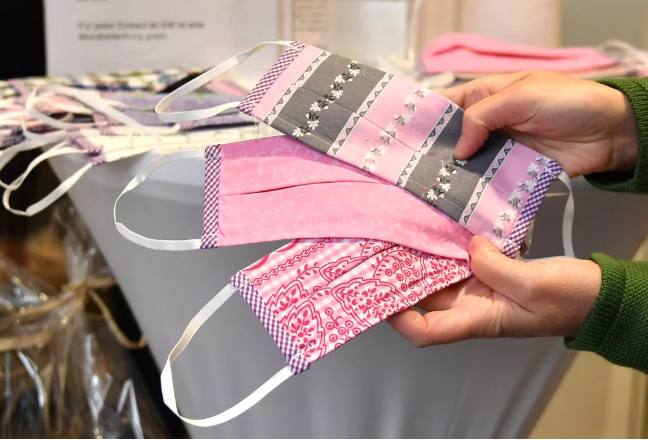

-
Uso das máscaras diminui risco de contágio por coronavírus;

Especialistas recomendam que sejam usadas máscaras caseiras, para evitar a falta de máscaras médicas para profissionais de saúde.
O uso das máscaras diminui a chance de contágio pelo novo coronavírus, reforçaram especialistas no programa "Combate ao Coronavírus" desta terça-feira (14). A recomendação já havia sido feita pelo Ministério da Saúde e pela OMS, ainda que com ressalvas (entenda melhor mais adiante nesta reportagem).
Veja, mais abaixo, ilustrações que mostram as chances de contágio entre duas pessoas que conversam. Uma delas está doente (a da esquerda); a outra, não. As situações mostram a probabilidade de se contaminar se apenas uma delas está usando máscara, se nenhuma delas está usando o acessório e se as duas estão usando.
A recomendação dos especialistas é que todos usem máscaras, mas, se não houver quantidade suficiente para todos, elas devem ser reservadas para os doentes. Eles também ressaltam que devem ser usadas máscaras caseiras, para que não falte aos profissionais de saúde.
Quando as duas pessoas conversam sem máscara, a chance que a pessoa saudável pegue a Covid-19 da pessoa que está doente é muito alta: